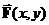
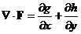

Mapping Fields
Purpose: The Mapping Fields applet helps to visualize the structure of two dimensional vector fields using the “grass seeds” or “iron filings” representation [1]. By “two dimensional vector field” we mean a vector field that is given by
(1)
In the “grass seeds” representations, the direction of the field at any point is indicated by the orientation of the correlations in texture near that point.
Usage: To use the applet, enter the x and y components of your field (that is, g(x,y) and h(x,y)) in the boxes provided, and hit “Grass Seeds”. After a few seconds the screen will display the grass seeds representation of your function. A blue rectangular box shows you the region within which the field is represented. Initially, the center is at the center of coordinates (x = 0 and y = 0), and the scale is set to 8, meaning that the range is –8 < x < 8 (horizontal) and –8 < y < 8 (vertical). You can change the center of the evaluation region by either dragging around the blue rectangular box on the display screen, or entering proper center coordinates in the provided boxes. You can change the scale of the evaluation region by using either the provided slider, or its accompanying textbox. After a texture is displayed, you can zoom in and out using “alt-left click-drag”.
If you choose “Equipotential Lines” instead of “Grass Seeds”, the applet will display the vector field that is everywhere perpendicular to  , i.e. it will display the field
(2)
If is an electrostatic vector field, this would define the equipotentials of that problem. To get you started in exploring various functions, we give some examples, which can be selected using the “Example” pull down box (left click and scroll to select).
Functions: Use “^” for power, “*” for multiplication, “/” for division, “+” and “–” for addition and subtraction. You are also provided with a set of elementary functions, such as square root (sqrt), trigonometric (sin, cos and tan), inverse trigonometric (asin, acos and atan), hyperbolic (sinh, cosh and tanh), exponential (exp) and logarithmic (natural: ln, and base 10: log).
Polar coordinates: If you enter “r”, the program will interpret that letter as “sqrt(x^2+y^2)”, so that entering e.g. the field of a dipole is easier. If you enter “t”, the program will interpret it as the counter-clockwise angle θ from the x-axis, equivalent to “atan(y/x)”, but will yield a value between –π and π, in contrast to using “atan” explicitly, which ranges between –π/2 and π/2 only.
Hints: In two dimensions the divergence of F(x,y) is given by
 (3)
where the partial of g(x,y) with respect to x is just the ordinary derivative with respect to x holding y constant. If you want to make a function which has no sources ( ), choose g(x,y) and h(x,y) so that the quantity on the right hand side above is zero. An example of this would be g(x,y) = x and h(x,y) = – y. In two dimensions, the curl of F(x,y) is given by
 (4)
(4)
If you want to make a function that has no sources but has a circulation, choose g(x,y) and h(x,y) so that the divergence is zero but the curl is not. For example, g(x,y) = – y and h(x,y) = x is a function with zero divergence and non-zero curl. To get a function which both has a source and a circulation, you must have both of the quantities defined above non-zero (for example, g(x,y) = – y + x and h(x,y) = y + x).
In electrostatics, all of our vector electric fields will have non-zero divergence and zero curl. In magnetostatics, all of our vector magnetic fields will have zero divergence and non-zero curl. When we let things vary with time, we will pick up electric fields with both non-zero divergence and non-zero curls, but as far as we know magnetic fields even in time varying situations always have zero divergence (there are no magnetic monopoles).
References
[1] B. Cabral and C. Leedom, “Imaging Vector Fields Using Line Integral Convolution” Proc. SIGGRAPH ’93, pp. 263-270, 1993.